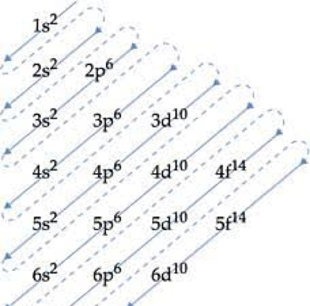
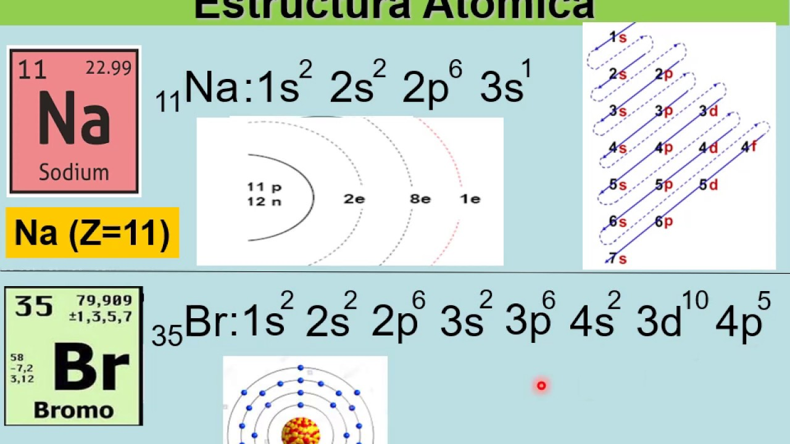

Quimica
triangulo de pauling
¿que es?
El triángulo de Pauling, también conocido como el diagrama de electronegatividad de Pauling, es una
herramienta gráfica que ayuda a predecir el tipo de enlace químico que se formará entre dos átomos
basándose en la diferencia de electronegatividad entre ellos. La electronegatividad es una medida de
la capacidad de un átomo para atraer electrones en un enlace químico.
Concepto Básico:
electronegatividad
Cada elemento químico tiene un valor de electronegatividad, que es una
medida de su tendencia a atraer electrones cuando forma un enlace. En la escala de Pauling, el flúor
tiene la electronegatividad más alta (4.0) y los metales alcalinos tienen electronegatividades bajas
(cerca de 0.7).
uso del triangulo de pauling
El triángulo de Pauling se puede representar gráficamente
donde los tipos de enlaces se predicen de acuerdo con la diferencia de electronegatividad (Δχ) entre dos
átomos. Los tipos principales de enlaces son:
Enlace Iónico:
Se forma cuando la diferencia de electronegatividad entre dos átomos es alta
(generalmente Δχ > 1.7). En este caso, un átomo dona un electrón y el otro átomo lo acepta, formando
iones.
Enlace Covalente Polar:
Ocurre cuando la diferencia de electronegatividad es moderada
(aproximadamente entre 0.4 y 1.7). Los electrones se comparten entre los átomos, pero de manera
desigual, creando un dipolo eléctrico.
Enlace Covalente No Polar:
Se da cuando la diferencia de electronegatividad es baja (Δχ < 0.4).
Los electrones se comparten de manera casi equitativa entre los átomos.
Ejemplo de Uso:
Imaginemos que queremos predecir el tipo de enlace entre el sodio (Na) y el
cloro (Cl):
Electronegatividades:
: El sodio tiene una electronegatividad de aproximadamente 0.9 y el
cloro tiene una electronegatividad de aproximadamente 3.0.
Diferencia de Electronegatividad:
Δχ = |3.0 - 0.9| = 2.1.
Tipo de Enlace:
Debido a que la diferencia de electronegatividad es mayor a 1.7, podemos
predecir que el enlace entre el sodio y el cloro será iónico.
Visualización del Triángulo de Pauling:
El triángulo de Pauling no siempre se representa
literalmente como un triángulo en gráficos modernos, pero conceptualmente se refiere a la división
de los tipos de enlaces según las diferencias de electronegatividad.

distribucion electronica
¿que es?
La distribución electrónica es la disposición de los electrones de un átomo en sus
distintos niveles y subniveles de energía. Esta distribución determina cómo los electrones están
organizados alrededor del núcleo y es crucial para entender la reactividad y las propiedades
químicas de los elementos.
Principios Básicos de la Distribución Electrónica:
Niveles de Energía:
Los electrones se distribuyen en capas o niveles de energía alrededor
del núcleo. Cada nivel de energía puede contener un número máximo de electrones según la fórmula
2n2 donde n es el número del nivel de energía (n=1, 2, 3,...).
Subniveles de Energía:
Cada nivel de energía está dividido en subniveles designados como s,
p, d y f. Los subniveles tienen diferentes capacidades de electrones:
Subnivel s:
puede contener hasta 2 electrones.
Subnivel p:
puede contener hasta 6 electrones.
Subnivel d:
puede contener hasta 10 electrones.
Subnivel f:
puede contener hasta 14 electrones.
Principio de Aufbau:
Los electrones llenan los subniveles de energía más bajos primero
antes de llenar los subniveles de energía más altos.
Principio de Exclusión de Pauli:
No puede haber dos electrones en un átomo con los mismos
cuatro números cuánticos. En otras palabras, un orbital puede contener un máximo de dos electrones
con espines opuestos
Regla de Hund:
Los electrones llenan orbitales individuales en un subnivel antes de
aparearse.
Ejemplo de Distribución Electrónica:
Consideremos el átomo de oxígeno, que tiene un número
atómico de 8 (es decir, tiene 8 electrones):
Niveles y subniveles:
Primer nivel de energía (n=1):
tiene un subnivel s
Nivel 2:
2s22p4 (2 electrones en el subnivel 2s y 4 electrones en el subnivel 2p)
